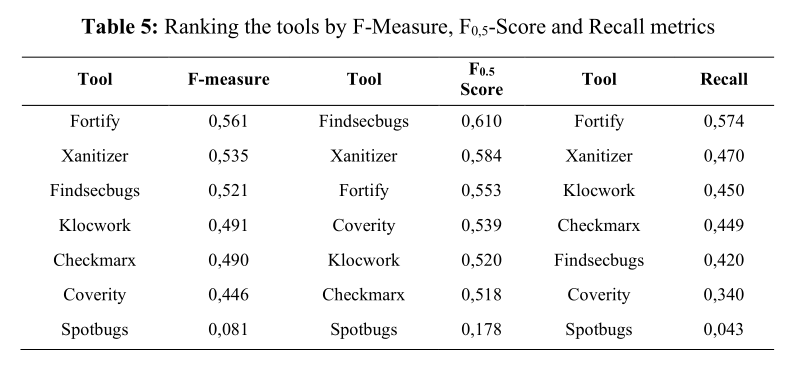

research
https://www.researchgate.net/publication/342597384_Benchmarking_Approach_to_Compare_Web_Applications_Static_Analysis_Tools_Detecting_OWASP_Top_Ten_Security_Vulnerabilities• F-measure is the best metric for selecting the tool that detects a
high number of vulnerabilities while reporting a low number of false positives for a best
effort (heightened-critical applications)
• F0,5 Score
metric favors precision and is adequate metric for non-critical applications where the time
of development can be quicker as it allows to reward the tools with better precision. This
makes tools with high precision to obtain much better results.
• Recall metric is adequate for high critical applications where the
objective is to discover the highest number of vulnerabilities. Precision metric penalizes
true positive ratio having into account the false positive score